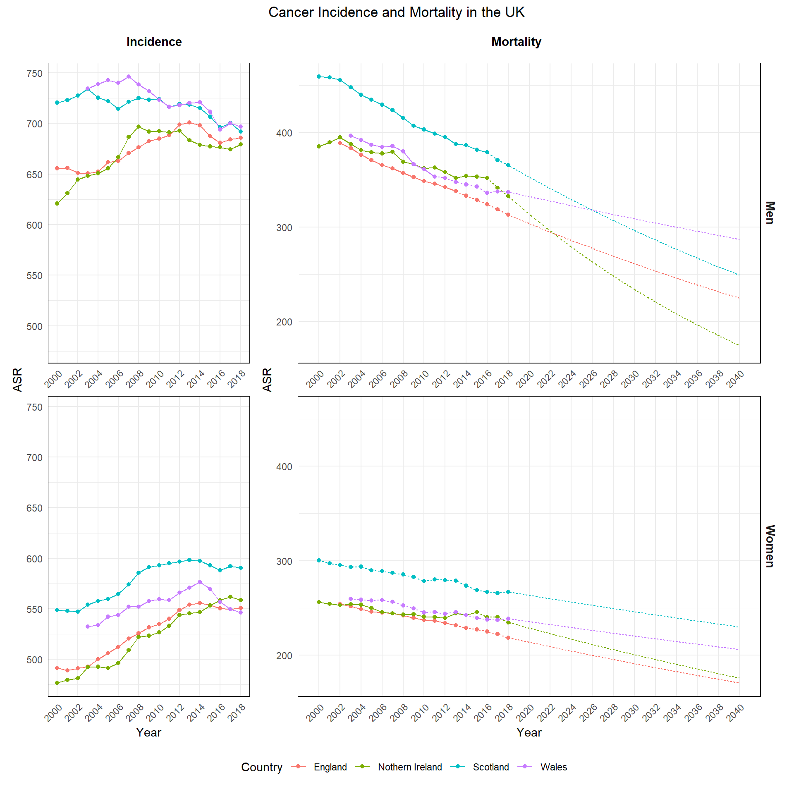

Final Position Paper Figures
Final plots for the ‘position’ paper. Organised by appearance.
Set-up
Packages
Filepaths
Visual Options
Plotting Functions
Recent APC Table Function
Recent APC Barchart Function
Extracting JoinPoint data
Projecting JoinPoint Trends Forwards
Plotting Joinpoint Incidence and Mortality
ggplot General Function
General function to apply to ggplot objects to get same theme etc. between plots
Meeting Mortality Target Table Generation
Read in data
Plot Generation
Main
Figure 1
Figure 1 is a plot showing the trend of incidence rates for all cancers combined (excl. NMSC) by country
Data Sources:
England - NHS England
Scotland - NHS Scotland
Northern Ireland - QUB Northern Ireland Cancer Registry
Wales - Public Health Wales
Need to add further annotation to this plot - explaining the dotted line is the most recent join and that the data is 3 year rolling averages
Figure 2
Figure 2 consists of four plots showing recent trends in APC by cancer site combined.
Data Sources:
England - NHS England
Scotland - NHS Scotland
Northern Ireland - QUB Northern Ireland Cancer Registry
Wales - Public Health Wales

Figure 2 (Test)

Figure 3
Figure 3 consists of two plots showing recent trends in risk factors by UK country
Smoking/Alcohol/Obesity

Activity/Fibre/Processed Meat

Figure 4
Figure 4 has a plot comparing screening rates in different UK countries for both breast and bowel screening

Supplement
Figure 1
Supplement Figure 1 consists of plotting cancer incidence for all sites of interest
Data Sources:
England - NHS England
Scotland - NHS Scotland
Northern Ireland - QUB Northern Ireland Cancer Registry
Wales - Public Health Wales

Figure 2
Figure 2 consists of plotting trends in smoking in the UK
Data Sources:
England - Health Survey England
Scotland - Scottish Health Survey
Northern Ireland - Health Survey Nothern Ireland
Wales - National Survey for Wales

Figure 3
Figure 3 consists of plotting obesity trends by UK nation
Data Sources:
England - Health Survey England
Scotland - Scottish Health Survey
Northern Ireland - Health Survey Nothern Ireland
Wales - National Survey for Wales

Figure 4
Supplement Figure 4 is a graph showing the trends in drinking above the guidelines in the UK
Data Sources:
England - Health Survey England
Scotland - Scottish Health Survey
Northern Ireland - Health Survey Nothern Ireland
Wales - National Survey for Wales

Figure 5
Supplement Figure is a graph showing the trends in fibre consumption in the UK
Data Sources:
UK - NDNS (via UK Data Service)

Figure 6
Supplement Figure 6 is a graph showing the trends in processed meat consumption in the UK
Data Sources:
UK - NDNS (via UK Data Service)

Figure 7
Figure 7 details trends in physical activity over guidelines
Data Sources:
England - Health Survey England
Scotland - Scottish Health Survey
Northern Ireland - Health Survey Nothern Ireland
Wales - National Survey for Wales

Supplement Tables
|
JP Target Analysis: England |
||||
| For a Goal of a 15% Reduction in Mortality by 2040 from 2024 | ||||
| Cancer | Sex | APC Required | Current APC | Year Achieved |
|---|---|---|---|---|
| All sites excl. NMSC | Men | -1.011 | -1.496 | 2034 |
| All sites excl. NMSC | Women | -1.011 | -1.12 | 2038 |
| Breast | Men | - | - | - |
| Breast | Women | -1.011 | -1.355 | 2035 |
| Colorectal | Men | -1.011 | -0.875 | 2042 |
| Colorectal | Women | -1.011 | -0.79 | 2044 |
| Lung | Men | -1.011 | -3.415 | 2028 |
| Lung | Women | -1.011 | -2.498 | 2030 |
| Oesophageal | Men | -1.011 | -1.011 | 2039 |
| Oesophageal | Women | -1.011 | -1.518 | 2034 |
| Pancreatic | Men | -1.011 | 0.583 | Inf |
| Pancreatic | Women | -1.011 | 0.231 | Inf |
| Prostate | Men | -1.011 | -0.957 | 2040 |
| Prostate | Women | - | - | - |
|
JP Target Analysis: Nothern Ireland |
||||
| For a Goal of a 15% Reduction in Mortality by 2040 from 2024 | ||||
| Cancer | Sex | APC Required | Current APC | Year Achieved |
|---|---|---|---|---|
| All sites excl. NMSC | Men | -1.011 | -2.886 | 2029 |
| All sites excl. NMSC | Women | -1.011 | -1.308 | 2036 |
| Breast | Men | - | - | - |
| Breast | Women | -1.011 | -1.181 | 2037 |
| Colorectal | Men | -1.011 | 3.668 | Inf |
| Colorectal | Women | -1.011 | -0.068 | 2261 |
| Lung | Men | -1.011 | -1.918 | 2032 |
| Lung | Women | -1.011 | -0.331 | 2073 |
| Oesophageal | Men | -1.011 | -3.506 | 2028 |
| Oesophageal | Women | -1.011 | -9.175 | 2025 |
| Pancreatic | Men | -1.011 | 3.247 | Inf |
| Pancreatic | Women | -1.011 | -1.751 | 2033 |
| Prostate | Men | -1.011 | 0.087 | Inf |
| Prostate | Women | - | - | - |
|
JP Target Analysis: Scotland |
||||
| For a Goal of a 15% Reduction in Mortality by 2040 from 2024 | ||||
| Cancer | Sex | APC Required | Current APC | Year Achieved |
|---|---|---|---|---|
| All sites excl. NMSC | Men | -1.011 | -1.728 | 2033 |
| All sites excl. NMSC | Women | -1.011 | -0.679 | 2047 |
| Breast | Men | - | - | - |
| Breast | Women | -1.011 | -1.795 | 2032 |
| Colorectal | Men | -1.011 | 1.404 | Inf |
| Colorectal | Women | -1.011 | 2.171 | Inf |
| Lung | Men | -1.011 | -2.903 | 2029 |
| Lung | Women | -1.011 | -1.362 | 2035 |
| Oesophageal | Men | -1.011 | -1.059 | 2039 |
| Oesophageal | Women | -1.011 | -1.218 | 2037 |
| Pancreatic | Men | -1.011 | 4.257 | Inf |
| Pancreatic | Women | -1.011 | 0.228 | Inf |
| Prostate | Men | -1.011 | -0.731 | 2046 |
| Prostate | Women | - | - | - |
|
JP Target Analysis: Wales |
||||
| For a Goal of a 15% Reduction in Mortality by 2040 from 2024 | ||||
| Cancer | Sex | APC Required | Current APC | Year Achieved |
|---|---|---|---|---|
| All sites excl. NMSC | Men | -1.011 | -0.732 | 2046 |
| All sites excl. NMSC | Women | -1.011 | -0.667 | 2048 |
| Breast | Men | - | - | - |
| Breast | Women | -1.011 | 1.597 | Inf |
| Colorectal | Men | -1.011 | -1.726 | 2033 |
| Colorectal | Women | -1.011 | 0.239 | Inf |
| Lung | Men | -1.011 | -2.591 | 2030 |
| Lung | Women | -1.011 | -0.182 | 2113 |
| Oesophageal | Men | -1.011 | 0.515 | Inf |
| Oesophageal | Women | -1.011 | 0.532 | Inf |
| Pancreatic | Men | -1.011 | 0.341 | Inf |
| Pancreatic | Women | -1.011 | 0.202 | Inf |
| Prostate | Men | -1.011 | -0.01 | 3586 |
| Prostate | Women | - | - | - |